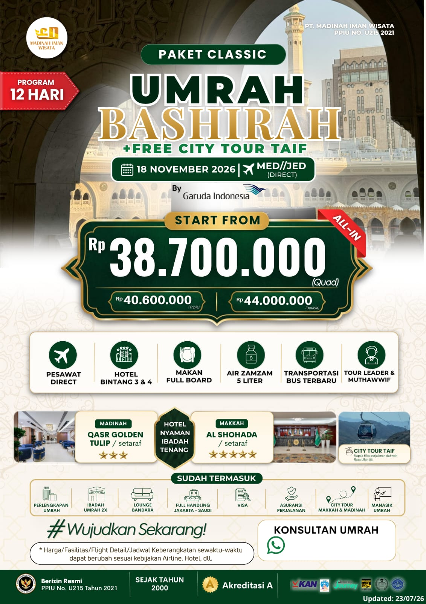
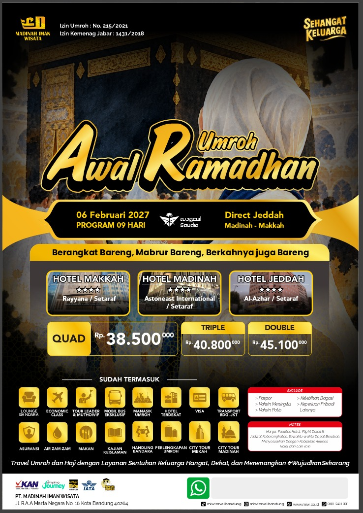
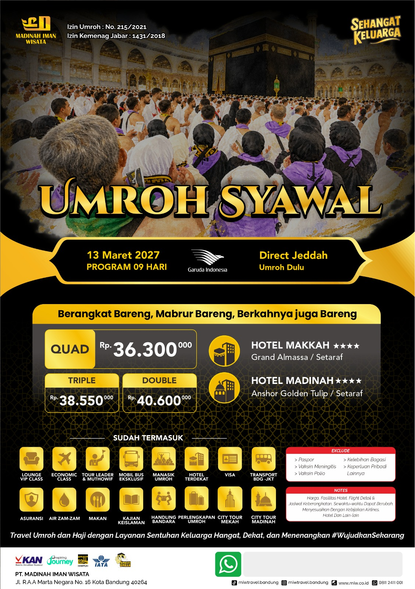
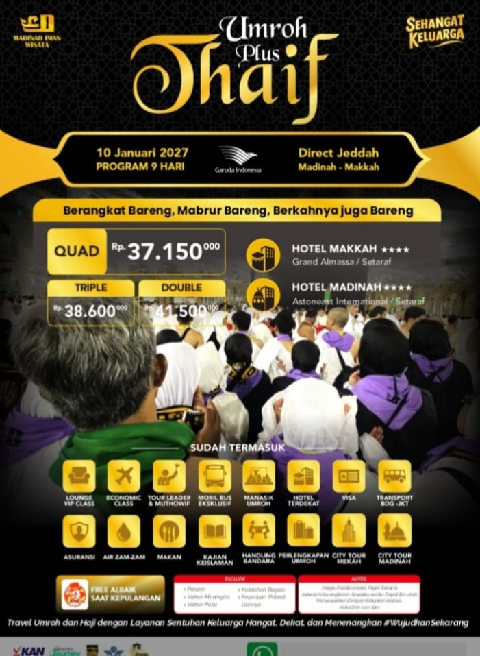
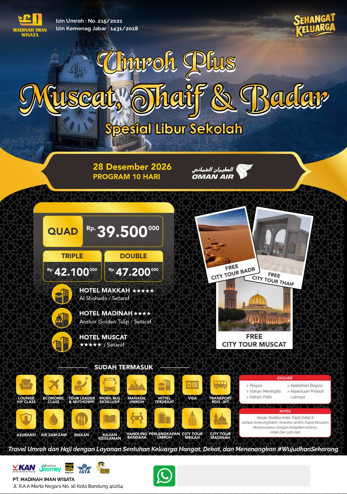
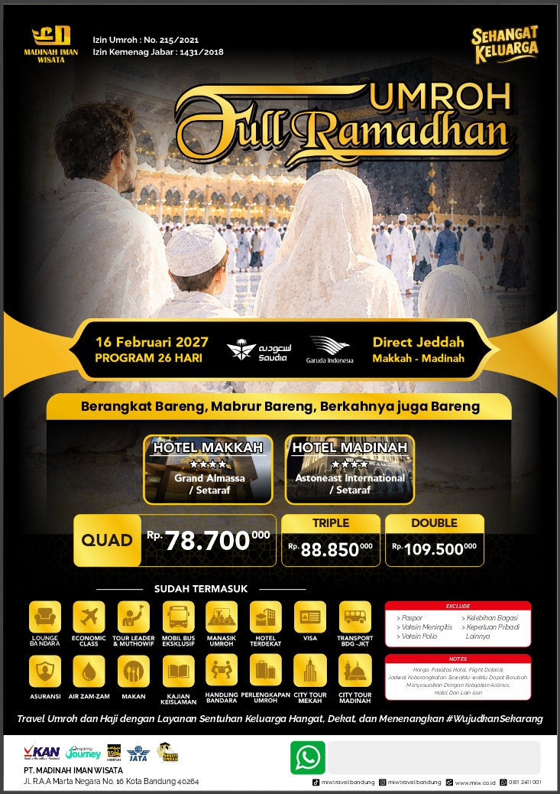
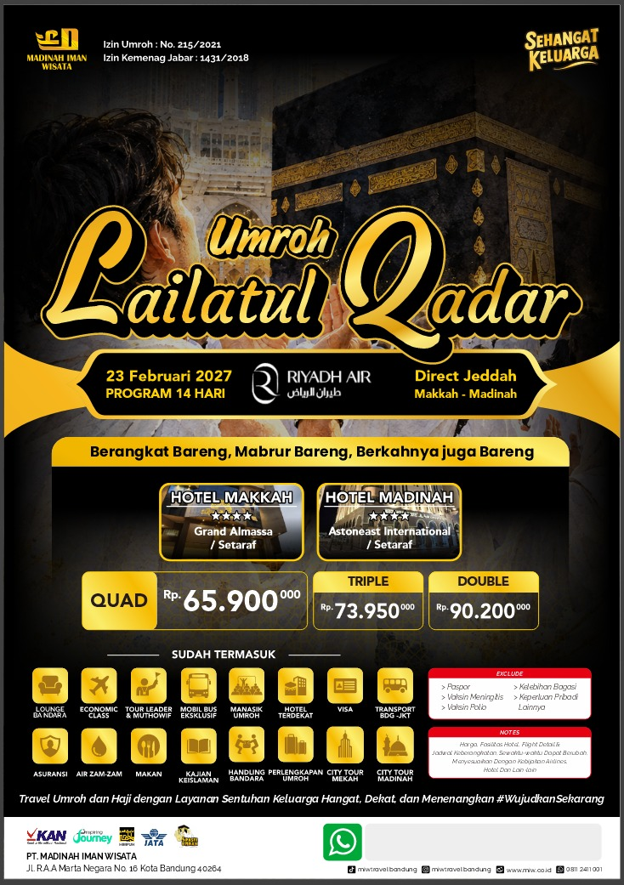
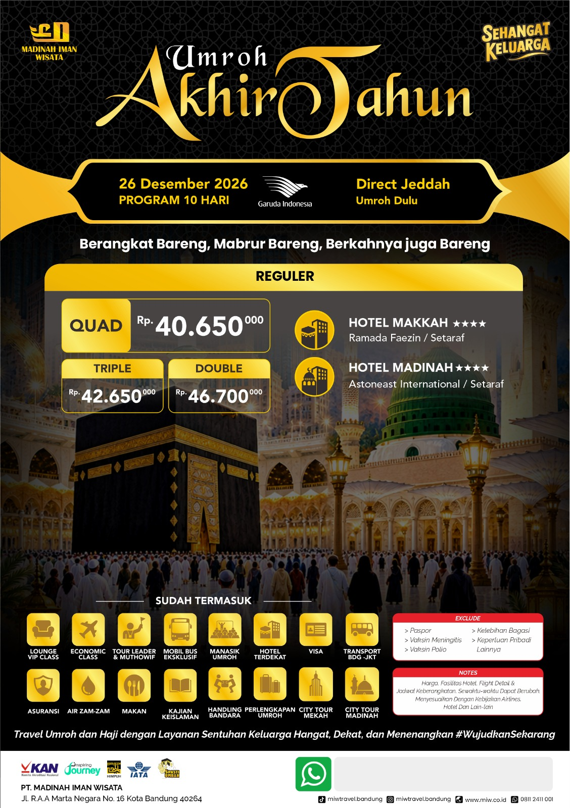

Direktori Usaha dan UMKM Jama'ah. Mari saling mendukung dan menguatkan kemandirian ekonomi umat bersama.
Berizin Resmi PPIU No. U215 Tahun 2021. Melayani perjalanan Umroh sesuai sunnah dengan fasilitas nyaman dan pembimbing berpengalaman. Tersedia berbagai pilihan paket keberangkatan:








Menerima pesanan nasi box, tumpeng, dan paket aqiqah. Halal, lezat, dan higienis. Solusi praktis untuk acara syukuran keluarga Anda.
Hubungi via WhatsAppMewujudkan pernikahan impian yang penuh berkah tanpa melanggar syariat. Menyediakan dekorasi elegan, rias pengantin syar'i, dan dokumentasi.
Hubungi via WhatsAppPusat busana muslim pria dan wanita terlengkap di Katapang. Sedia gamis, koko, sarung, mukena, dan perlengkapan ibadah lainnya dengan harga grosir.
Hubungi via WhatsApp